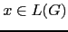
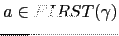

Sig: Análisis Sintáctico Ascendente en Sup: Análisis Sintáctico Ascendente en Ant: Construcción del Árbol Sintáctico Con:
jison asegurese
de seguir los siguientes consejos:
Z a una variable que representa el concepto ``lista de parámetros'',
llámela ListaDeParametros.
%token. De esta manera
el lector de su programa se dará cuenta rápidamente que dichos identificadores
no se corresponden con variables sintácticas. Por la misma razón,
si se trata de terminales
asociados con caracteres o cadenas no es tan necesario que los declare,
a menos que,
como en el ejemplo de la calculadora para '+' y '*',
sea necesario asociarles una
precedencia.
-v para producir
el fichero .output conteniendo información detallada sobre
los conflictos y el autómata. Cuando haya un conflicto shift-reduce
no resuelto busque en el fichero el estado implicado y
vea que LR(0) items
jison
el conflicto se produce ante un terminal ,
es porque
jison contabiliza un error por cada terminal
. Por esta razón,
si hay 16 elementos en
jison informará de la existencia
de 16 conflictos shift-reduce,
cuando en realidad se trata de uno sólo. No desespere,
los conflictos ``auténticos'' suelen
ser menos de los que jison anuncia.
%{ y %}. Estos delimitadores
deberán aparecer en una línea aparte. Por ejemplo:
%{
our contador = 0;
%}
%token NUM
...
%%